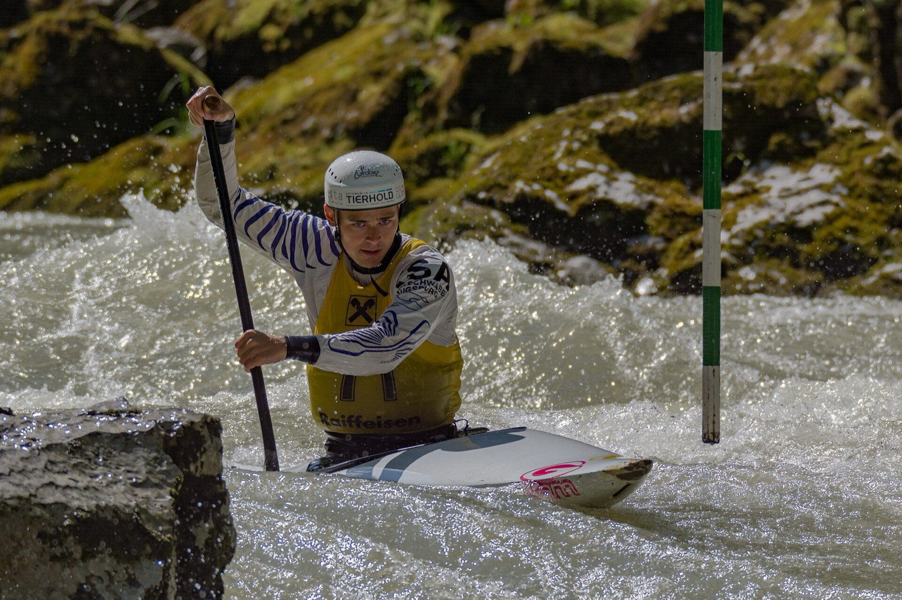

Your version of a bad day
- Up too quiet. Your buddy surfaces late from a long breath-hold and isn’t answering. Getting him to the rocks is half the job — breaths first is the other half.
- The spear. A loaded speargun, a moment of inattention, and a shaft through the meat of a calf. Bleeding control on wet rock, a long swim-and-scramble from the truck.
- The sting that spreads. Something on the reef lit up her forearm, and now there are welts past the elbow and a cough she didn’t have. Most stings are pain; this one is becoming an emergency with a name.
Start here
All 15 lessons are worth your time, but this order front-loads what your world serves up:
- Water & Lightning — drowning response, breaths first — the shore half of a blackout rescue
- Airway & Breathing — rescue breathing is a core skill at this level, and drowning is the reason
- Bleeding & Wounds — spear shafts and reef both bleed — control it on wet rock
- Bites & Stings — marine stings handled without folklore — and when systemic means epi
- Evacuation — a remote coast has no street address — the call has to carry everything
Then pressure-test it
Interactive scenarios — one decision at a time, tempting mistakes included, debrief at the end:
- Snoring Isn’t Sleeping — an unresponsive patient’s airway, fixed with position
- Find the Epi — when a sting goes systemic, the clock owns the scene
- Two Go, One Stays — getting help to a coastline with no address
The certification question, honestly. “Wilderness First Aid” isn’t a regulated credential. No government body defines what a WFA card means — it means whatever the company that printed it says it means. What counts in front of a patient is whether you can do the work. This course teaches the work, free, and issues a record of completion — not a certificate, and we won’t pretend otherwise. DAN courses and dive-agency training — rescue diver, oxygen provider — are the real credentials for anything involving pressure, and nothing here substitutes for them. This covers the beach; they cover the bends. If nobody requires you to hold a card, what you need are the skills, not the laminate.
What this is
Fifteen lessons, a 40-question knowledge check, sixteen practice scenarios, a printable field reference card, and a kit checklist. Free, no account, nothing recorded about you, source on GitHub. It teaches decision-making, not hands-on skill — practice the hands-on parts on a real, padded, complaining friend.